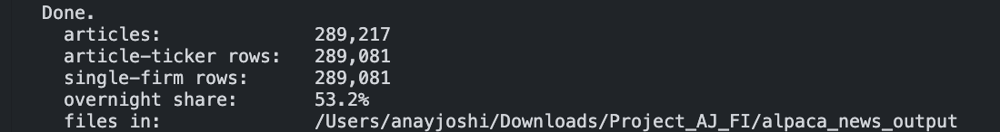
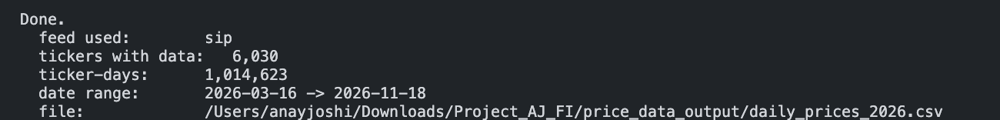

Testing whether an AI news-trading edge still works after everyone knows about it
Group 5
The paper: Lopez-Lira & Tang (2024) asked GPT-4 if each headline was good or bad news. Trading on the answers made about 0.38% a day.
The catch: The profit shrank every year as more investors started using AI tools.
Our question: Does the edge still work now that the paper is public and AI is everywhere?
What's new: Fresh 2026 news, a clean test of AI model size, and real trading costs.
| Measure | Value |
|---|---|
| Daily profit | 0.38% |
| Sharpe ratio | 3.28 |
| Sharpe in late 2021 | 6.54 |
| Sharpe in 2023 | 2.33 |
| Our 2026 headlines | 289,217 |
About 134,000 headlines on 4,100 U.S. companies (Oct 2021 to Dec 2023)
"Is this headline good or bad for the stock price?"
YES = +1, NO = -1, UNKNOWN = 0
Buy good-news stocks, sell short bad-news stocks, every day
"Cigna Calls Off Humana Pursuit, Plans Big Stock Buyback"
A standard sentiment tool saidPositive
GPT-4 said, for HumanaNO Humana loses the premium a buyer would have paid.
The lessonThe AI understood whose news it was.
| Result | In plain words |
|---|---|
| 0.38% a day | Average daily profit before costs |
| Sharpe ratio 3.28 | Very high return for the risk taken |
| Survives risk factors | Not just a hidden bet on known risks |
| Short side: 0.29% a day | Most profit came from bad news |
| About 0.20% cost | Trading cost that wipes out the profit |
The edge fell by about two thirds in two years.
Prices take a day or two to fully react to news.
Small stocks and short selling are hard and costly to trade.
Weak models get it wrong and lose money. Only large models profit.
| Study | What they found | Why it matters for us |
|---|---|---|
| Tetlock (2007) | The tone of news predicts market moves | News holds information about prices |
| Loughran & McDonald (2011) | Finance needs its own word lists for tone | Our simple sentiment comparison |
| Jiang, Li & Wang (2021) | Prices underreact to firm news | Why trading on news can work |
| Gu, Kelly & Xiu (2020) | Machine learning improves return prediction | Our choice of forecasting models |
| McLean & Pontiff (2016) | Profitable patterns weaken after they are published | Exactly what we test for this paper |
| Gap in the paper | What we add |
|---|---|
| Short sample (about two years) | Fresh 2026 news the paper never saw |
| AI models came from different companies | One model family (Gemma) in three sizes, so only size changes |
| Short-selling and trading costs ignored | Check which stocks can be shorted, and include realistic costs |
| Profit decline shown only as a trend | A proper before-and-after test around ChatGPT's launch |
| Unclear if profit is news or risk | Test whether the AI score predicts future earnings |
| Data | Source | Status |
|---|---|---|
| 289,217 news headlines, Apr to Nov 2026 | Alpaca News | Collected |
| Daily prices, 6,030 stocks (1,014,623 days) | Alpaca Market Data | Collected |
| Risk factors (FF3, FF5, q) and VIX | Ken French, global-q, FRED | Collected |
| 2021 to 2023 news, to replicate the paper | FNSPID | Being added |
| Company earnings | SEC EDGAR | Being added |


"Anthropic prices IPO at $83 a share, above its $70 to $78 range"
| Step | What happens |
|---|---|
| News type | Good news: priced above its range |
| Paper's rule | Good news before 9 a.m., so buy at the open |
| Entry price | $111.50, the first trade |
+34% from the IPO price to the first trade
About -15% from the first trade to mid-afternoon
| Job | Model | Why we chose it |
|---|---|---|
| Read the news | Gemma (1B, 4B, 12B) | Same family in three sizes, and it never saw our 2026 news |
| Simple comparison | FinBERT and a finance word list | Shows if the AI adds anything beyond basic sentiment |
| Forecast returns | Elastic Net | Simple benchmark |
| Forecast returns | LightGBM | Finds patterns, like bad news hurting small stocks more |
| Forecast returns | NN3 neural network | Small networks work best for stock returns |
| Explain results | Topic models and SHAP | Shows which news the AI gets right or wrong |
| Check | Our test |
|---|---|
| Main result | Daily trading results and regressions |
| Different periods | Before vs after ChatGPT; calm vs stressed markets |
| Other explanations | Adjust for FF3, FF5 and q-factor models |
| Cash flow or discount rate? | Does the AI score predict future earnings? |
| Frequency | Daily vs weekly signals |
The edge is smaller in 2026
The bigger model beats the small one
Most profit stays in hard-to-trade stocks
The AI score predicts future earnings
Questions?